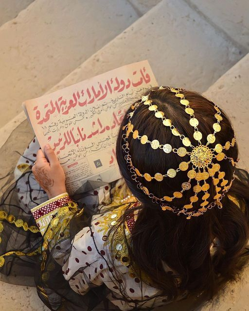
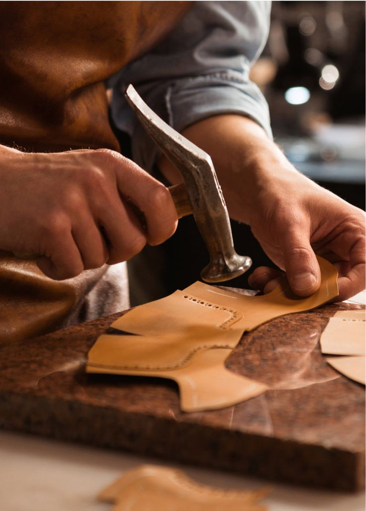
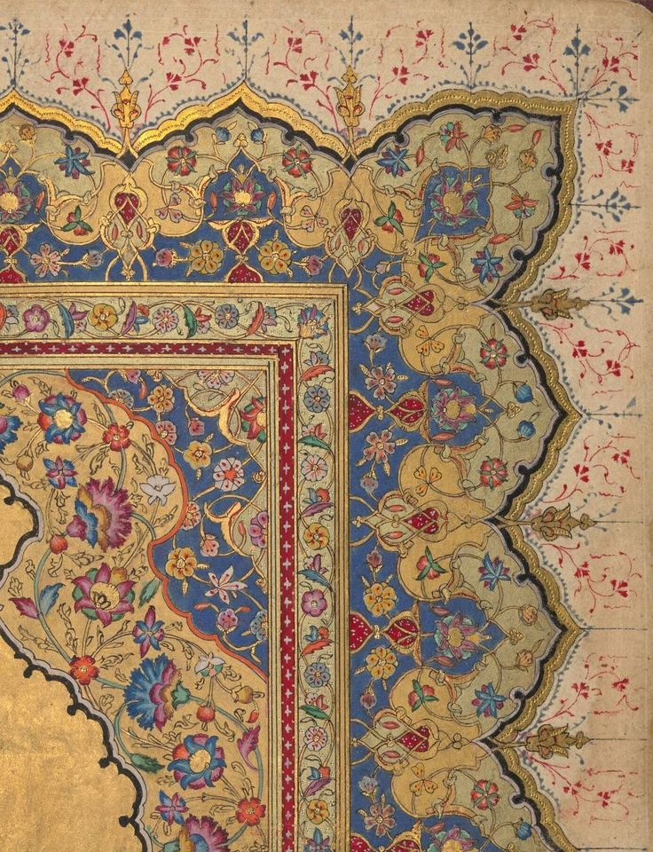

Our Story
Hayfa (هيفاء) means elegant and graceful in Arabic — the perfect reflection of what we stand for.
Founded in Surabaya, Hayfa Leather was born out of a passion to revive heritage through handcrafted luxury. Each bag is made by local artisans using ethically-sourced leather, inspired by the beauty of Arabic architecture, Turkish mosaics, and the warm soul of the Middle East.
Our goal is to create not just accessories, but meaningful heirlooms — crafted with love, shaped by tradition, and carried with pride.


